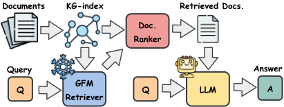
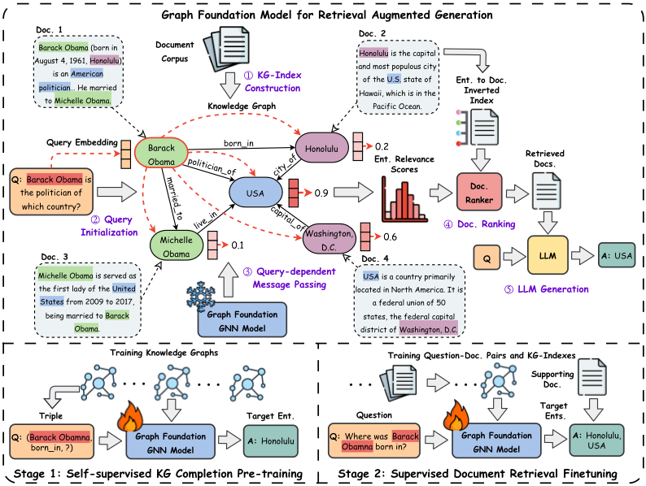
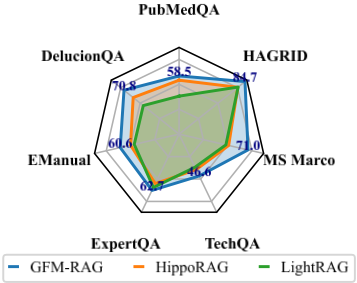
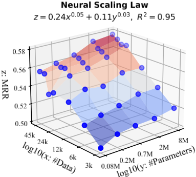
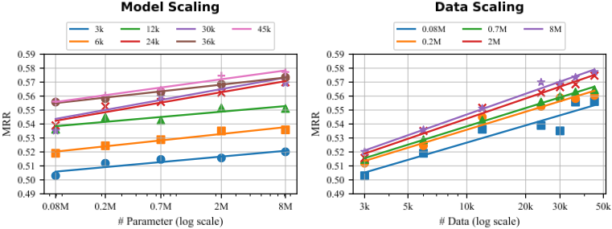
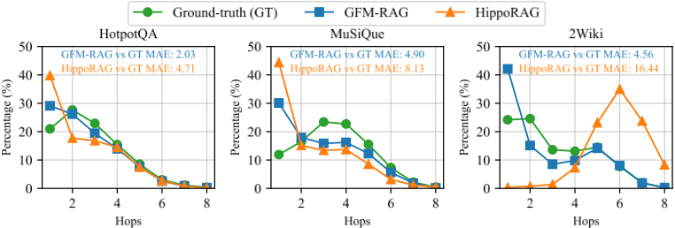

GFM-RAG：面向检索增强生成（RAG）的图基础模型
传统 RAG 将文档独立编码检索，难以捕捉知识片段间的复杂关系，多跳推理受限；GraphRAG 虽用图结构显式建模关系，但受图谱噪声与不完整影响，而引入 GNN 的方法又需在新数据集上从头训练、泛化性差。论文提出 GFM-RAG：先用 LLM（GPT-4o-mini）对文档做 OpenIE 构建知识图谱索引（KG-index），再用 8M 参数的 query-dependent GNN 检索器，在 60 个 KG、超 1400 万三元组、70 万文档上进行'KG 补全预训练 + 文档检索微调'两阶段训练，无需领域微调即可泛化到未见数据集。实验显示其在三个多跳 QA 数据集上取得 SOTA（R@2 最高超越 IRCoT+HippoRAG 19.8%），在七个领域 RAG 数据集上零微调平均超越 HippoRAG 18.9%，且单步 GNN 推理即完成多跳检索，比多步迭代检索更高效，索引构建 token 成本也低于 LightRAG/GraphRAG。对团队而言，这是'用图结构组织检索上下文'的代表性方案，可直接参考用于知识库问答与多跳检索场景。
现有 RAG 方法独立检索文档，难以捕捉知识片段间的复杂关系，限制需要跨文档整合知识的多跳推理；多步迭代检索（如 IRCoT）虽可缓解但计算成本高；GraphRAG 用图结构显式建模关系，但图结构常含噪声与不完整；引入 GNN 的图增强 RAG 虽有较强多跳推理能力，却需在新数据集上从头训练、泛化性差。论文要构建一个可直接应用于未见数据集与 KG、无需领域微调的图基础模型（GFM）检索器。
GFM-RAG 三组件流水线：(A) KG-index 构建——用 LLM（GPT-4o-mini）作 OpenIE 工具从文档抽取实体/关系/三元组，用稠密嵌入模型（ColBERTv2）做实体解析补充等价边，并构建实体-文档倒排索引；(B) GFM retriever——核心是 query-dependent GNN（6 层消息传递、DistMult 消息函数、hidden dim 512、共 8M 参数），查询、实体、关系均用同一句向量模型（all-mpnet-v2，冻结）初始化，从而在统一可迁移的语义+结构空间中实现跨图泛化；训练采用'自监督 KG 补全预训练 + 有监督文档检索微调'两阶段，损失为 BCE 与 ranking loss 的加权组合；(C) 文档排序与答案生成——top-T 实体经 IDF 加权并通过倒排索引映射为文档相关性分数，top-K 文档送入 LLM（GPT-4o-mini）生成最终答案。
三个多跳 QA 数据集（HotpotQA/MuSiQue/2Wiki）检索 SOTA：R@2 分别超越 IRCoT+HippoRAG 16.8%、8.3%、19.8%
QA 性能（GPT-4o-mini 生成、top5 文档）超越所有基线；与 IRCoT 结合多步检索后 EM 再提升 8.5%、21.2%、3.9%
零微调泛化：在七个领域 RAG 数据集（生物医学/客服/通用知识）上 R@5 平均超越 HippoRAG 18.9%
符合神经缩放律：性能随训练数据规模 x 与模型规模 y 按幂律 z ∝ 0.24·x^0.05 + 0.11·y^0.03 增长
效率：单步 GNN 推理完成多跳检索，效果优于单步方法且比 IRCoT 等多步迭代检索更高效（Table 3）
索引构建成本：每 1 万文档约 48M tokens（GPT-4o-mini 约 $2.6），低于 LightRAG（57M）与 GraphRAG（76M）
训练开销：8M 参数模型在 8×A100(80G) 上预训练 14 小时 + 微调 5 小时，训练数据为 60 个 KG、超 14M 三元组、70 万文档
首个面向 RAG 检索的图基础模型（GFM）：区别于 HippoRAG 等仅依赖图结构算法（Personalized PageRank）而易受图谱噪声/不完整影响；区别于已有 GNN 增强检索方法需在新数据集上从头训练，GFM 经大规模两阶段训练后可零微调泛化到未见 KG 与语料；区别于 IRCoT 等多步迭代检索，单步 GNN 消息传递即可完成多跳推理，效率更高；并验证其性能符合神经缩放律，具备随数据与模型规模继续提升的潜力。
相关度级别：high
命中能力域：3.1 上下文工程与记忆
理由：团队 3.1 能力域明确覆盖 RAG/检索增强与结构化上下文组织，本文正是该方向的代表性工作：用 KG-index 显式建模文档间关系、用预训练图模型替代纯结构算法或多步 LLM 迭代检索，直接回应知识库问答中'多跳检索与跨文档知识整合'这一核心痛点；同时给出索引构建 token 成本、索引时间、检索效率等工程化数据，并验证零微调泛化能力，对团队在 RAG 流水线与 GraphRAG 类方案选型上有直接落地参考价值。
建议动作：深入精读并做内部分享
arXiv:2502.01113v3 [cs.IR] 2025年12月11日
GFM-RAG：面向检索增强生成（RAG）的图基础模型
Linhao Luo 1 ∗ , Zicheng Zhao 2 ∗ , Gholamreza Haffari 1 , Chen Gong 3 , Dinh Phung 1 , Shirui Pan 4 †
1 莫纳什大学，2 南京理工大学，
3 上海交通大学，4 格里菲斯大学，
{Linhao.Luo,gholamreza.haffari,dinh.phung}@monash.edu,
zicheng.zhao@njust.edu.cn, chen.gong@sjtu.edu.cn, s.pan@griffith.edu.au
检索增强生成（Retrieval-Augmented Generation, RAG）已被证明能有效地将知识整合到大语言模型（LLM）中。然而，传统 RAG 难以捕捉知识片段之间的复杂关系，限制了其在需要整合多源知识的复杂推理任务中的表现。近来，图增强检索增强生成（GraphRAG）通过构建图结构来显式建模这些关系，从而实现更有效且更高效的检索器。尽管如此，其性能仍受到图结构中噪声和不完整性的制约。为解决这一问题，我们提出了 GFM-RAG，一种用于检索增强生成的新型图基础模型（GFM）。GFM-RAG 的核心是一种创新的图神经网络，它在图结构上进行推理，以捕捉复杂的查询-知识关系。该 GFM 拥有 8M 参数，在大规模数据集上经历了两阶段训练过程，数据集包含 60 个知识图谱，涵盖超过 14M 条三元组和 700k 篇文档。这使得 GFM-RAG 具有出色的性能和泛化能力，使其成为首个无需任何领域特定微调即可应用于未见数据集进行检索的图基础模型。在三个多跳问答（multi-hop QA）数据集和七个领域特定 RAG 数据集上进行的大量实验表明，GFM-RAG 在保持高效并符合神经缩放定律（neural scaling laws）的同时，取得了最先进的性能，凸显了其进一步提升的潜力。
大语言模型（LLMs）[47, 42, 70] 的最新进展极大地推动了自然语言处理的演进，使其成为通用人工智能（AGI）的基础模型。尽管具备出色的推理能力 [48]，LLM 在获取实时信息方面仍然受限，并且缺乏预训练语料库之外的领域特定知识。为了解决这些局限，检索增强生成（RAG）[12] 已成为一种流行的范式，其通过将相关文档检索到 LLM 生成的上下文中，为静态的 LLM 添加新知识。
现有的 RAG 方法通常独立地检索文档，难以捕捉知识片段之间的复杂关系 [30, 5, 43]。这一局限削弱了 LLM 在跨文档边界整合知识方面的性能，尤其是在多跳推理（multi-hop reasoning）任务 [72, 63] 以及法律判决 [28] 和医疗诊断 [25] 等需要跨多个来源进行推理的现实应用中。尽管近期的方法已将检索过程扩展为多个步骤并融入 LLM 推理，但由于需要与 LLM 进行迭代式的检索和推理，它们仍然面临高昂的计算成本 [64, 59, 26]。
∗ 同等贡献。
† 通讯作者。
第 39 届神经信息处理系统大会（NeurIPS 2025）。
近来，图增强检索增强生成（GraphRAG）[51, 17] 作为一种新颖的解决方案应运而生，它通过构建图结构来显式建模知识之间错综复杂的关系。这使得开发图增强检索器成为可能，从而能够利用图来识别相关信息。图的结构特性使 GraphRAG 能够捕捉全局上下文以及文档间的依赖关系，显著提升了跨多个来源的推理能力 [9]。诸如 HippoRAG [16] 之类的方法通过采用个性化 PageRank 算法，借助图来定位相关知识，从而增强检索。然而，这些算法仅依赖图结构，而图结构往往存在噪声或不完整，这限制了它们的整体性能。另一些方法 [41, 18] 则将图神经网络（GNNs）引入检索过程。由于 GNN 在图上具备强大的多跳推理能力，这些方法展现出令人瞩目的性能 [73]。尽管如此，它们在泛化能力方面仍存在局限，因为它们需要在新的数据集上从头开始训练。
如今，寻找一种能够在不同数据集之间迁移和泛化的基础图神经网络（GNN）模型一直是一个活跃的研究课题。理想情况下，基础 GNN 或图基础模型（graph foundation model, GFM）能够从大规模训练中受益，并在多样化的图上实现泛化 [40, 37]。已有研究致力于识别可在不同图之间共享的可迁移图 token（例如 motif、子树和关系图）[11, 66, 68]，以用于 GFM 设计。然而，这些方法主要关注图相关任务（例如节点分类和链接预测），尚未探索如何设计 GFM 来增强大语言模型（LLM）的推理能力。
为弥合这一差距，本文提出了一种有效、高效且通用的面向检索增强生成（retrieval augmented generation, RAG）的图基础模型（GFM-RAG），从而增强 LLM 的推理能力。如图 1 所示，我们从每个数据集的文档中构建知识图谱索引（KG-index）。KG-index 由相互关联的事实三元组组成，这些三元组指向原始文档，从而作为一个

跨多个来源的结构化知识索引，增强了面向复杂推理任务的多样化知识整合 [16]。接着，我们提出了图基础模型检索器（GFM retriever），它由一个查询依赖的 GNN 驱动，能够在统一的、可迁移的语义与图结构空间中捕获复杂的查询-知识关系。通过多层消息传递，GFM retriever 能够在单步内实现高效的多跳检索，超越了以往的多步方法。GFM retriever 拥有 8M 参数，经历了两阶段训练：在大规模数据集（包括 60 个知识图谱、超过 14M 条三元组和 700k 篇文档）上进行自监督的 KG 补全预训练和有监督的文档检索微调。这种大规模训练确保了 GFM retriever 的泛化能力，使其无需进一步训练即可应用于未见过的数据集。
在实验中，GFM-RAG 在三个多跳问答（multi-hop QA）数据集上取得了最先进的性能，展示了其在多跳推理中的有效性和高效性。它还在来自生物医学、客户服务和通用知识等不同领域的七个 RAG 数据集上表现出良好的泛化能力，且无需额外训练。此外，GFM-RAG 遵循神经缩放定律（neural scaling law）[19]，其性能受益于训练数据和模型规模的扩展，凸显了其作为基础模型在未来持续改进的潜力。本文的主要贡献如下：
2
检索增强生成（RAG）[12] 通过检索相关文档来辅助 LLM 生成，为将外部知识融入大语言模型（LLMs）提供了一种有效方式。早期工作采用预训练的稠密嵌入模型将文档编码为相互独立的向量 [30, 5, 34, 43]，随后通过计算向量与查询之间的相似度来进行检索。尽管这些方法具有高效性和泛化能力，但难以捕捉复杂的文档关系。后续研究探索了多步检索，即由 LLM 引导一个迭代过程，对多个文档进行检索和推理 [64, 24, 58]。然而，这种方法计算开销很大。
图增强检索增强生成（GraphRAG）[51, 17] 是一种新颖的方法，它通过构建图来显式建模知识之间的复杂关系，从而支持全面的检索与推理。早期研究侧重于从现有的知识图谱（KGs）中检索信息，例如 WikiData [65] 和 Freebase [3]，其方式是识别相关的事实或推理路径 [33, 38, 50]。近期研究则将文档与知识图谱相结合，以提升知识覆盖范围和检索效果 [9, 35]。这些文档会被构建成图结构，以辅助识别与 LLM 生成相关的内容 [8]。LightRAG [15] 基于图将图结构融入文本索引和检索中，实现了对实体及其关系的高效检索。HippoRAG [16] 利用个性化 PageRank 算法借助图来定位相关知识，从而增强多跳检索能力。然而，图结构可能存在噪声且不完整，导致性能欠佳。将图神经网络（GNNs）引入图增强 RAG 的尝试 [41, 18] 已展现出令人瞩目的结果，这得益于 GNN 在处理不完整图时的多跳图推理能力 [73]。尽管如此，由于缺乏图基础模型，这些方法在泛化能力上仍然受限。
图基础模型（Graph Foundation Model, GFM）旨在成为能够泛化到各种数据集的大规模模型 [40, 37]。设计 GFM 的主要挑战在于识别能够捕捉多样化图数据间不变性的图 token。例如，ULTRA [11] 利用知识图谱（KGs）中的四种基本关系交互，构建了一个具有 0.2M 参数、用于链接预测的 GFM。OpenGraph [68] 开发了一种图分词器（graph tokenizer），可将图转换为统一的节点 token 表示，从而使类 Transformer 的 GFM 能够完成链接预测和节点分类等任务。GFT [66] 引入了一种可迁移的树词表（tree vocabulary）来构建 GFM，该模型在图学习的多种任务和领域中均展现出有效性。尽管这些工作取得了成功，但大多数方法主要关注传统的图相关任务，且类 Transformer 的 GFM [61, 60] 在处理大规模图和捕捉逻辑关联方面存在困难 [52]。如何设计基于图神经网络（GNN）的 GFM 来增强大语言模型（LLM）的推理能力，仍然是一个悬而未决的问题。
所提出的 GFM-RAG 本质上通过从文档构建图并使用图增强检索器来检索相关文档，实现了一种 GraphRAG 范式。
GFM-RAG 概述。给定一组文档 D = { D 1 , D 2 , . . . , D |D| }，我们构建一个知识图谱 G = { ( e , r , e ′ ) ∈ E × R × E}，其中 e , e ′ ∈ E 与 r ∈ R 分别表示从 D 中提取的实体集合和关系集合。对于用户查询 q，我们旨在设计一个图增强检索器，通过利用知识图谱 G 从 D 中获取相关文档。整个 GFM-RAG 流程可以形式化为：
在第一步中，KG-index( · ) 从文档语料库 D 构建知识图谱索引 G，随后是我们提出的图基础模型检索器（GFM-Retriever），该检索器在大规模数据集上进行了预训练。它基于任意用户查询 q 和知识图谱索引 G 检索出 topK 个文档。检索到的文档 D K 连同查询 q 一起被输入到大语言模型（LLM）中，以生成最终答案 a。GFM-RAG 中的这三个主要组件如图 2 所示，并将在下文中详细介绍。
3

传统的基于嵌入（embedding）的索引方法将文档编码为相互独立的向量 [30, 5, 43]，在建模文档之间关系方面存在局限。相比之下，知识图谱（Knowledge Graphs, KGs）显式地捕获数百万事实之间的关系，能够为跨多个文档的知识提供结构化索引 [9, 16]。KG 索引的结构化特性与人类海马体记忆索引理论 [62] 高度契合：KG 索引如同一个人工海马体，存储知识记忆之间的关联，从而增强复杂推理任务中对多样化知识的整合能力 [16]。
为了构建 KG 索引，给定一组文档 D，我们首先从文档中抽取实体 E 和关系 R 以构成三元组 T。随后，构建实体到文档的倒排索引 M ∈ { 0, 1 } |E|×|D|，用于记录每个文档中提及的实体。这一过程可借助现有的开放信息抽取（Open Information Extraction, OpenIE）工具 [1, 77, 49] 来实现。为了更好地捕获知识之间的联系，我们进一步执行实体消解（entity resolution）[13, 74]，在语义相似的实体之间添加额外的边 T +，例如 ( USA , equivalent , United States of America )。因此，最终的 KG 索引 G 构建为 G = { ( e , r , e ′ ) ∈ T ∪ T + }。在实现中，我们利用一个 LLM [47] 作为 OpenIE 工具（提示词见表 22），并使用一个预训练的稠密嵌入模型 [55] 来进行实体消解。更多细节见 D.1 节。
GFM 检索器旨在基于任意用户查询和所构建的 KG 索引来检索相关文档。尽管 KG 索引提供了知识的结构化表示，但其仍然存在不完整性和噪声问题，导致仅依赖其结构进行检索时性能欠佳 [16]。近年来，图神经网络（GNNs）[67] 通过捕获知识之间的复杂关系，在检索或问答任务中展现出令人印象深刻的多跳推理能力 [41, 18]。然而，现有 GNN 的泛化能力有限，因为它们通常在特定图上进行训练 [40, 37]，这限制了其在未见语料库和知识图谱（KG）上的应用。因此，仍然需要一种无需额外训练即可直接应用于未见数据集和 KG 的图基础模型（Graph Foundation Model, GFM）。
为解决上述问题，我们提出了首个由图基础模型驱动的检索器（GFM retriever），它利用 GNN 的图推理能力，在统一且可迁移的空间中捕获查询、文档和知识图谱之间的复杂关系。GFM 检索器采用一种查询依赖的 GNN 来识别图中的相关实体，从而辅助定位相关文档。在大规模数据集上完成预训练后，GFM 检索器无需进一步训练即可直接应用于新的语料库和 KG。
训练目标。GFM 检索器的训练目标是最大化与查询相关的实体的似然，这可以通过最小化二元交叉熵（BCE）损失来优化：
其中 A_q 表示查询 q 的目标相关实体集合，E^- ⊆ E \ A_q 表示从 KG 中采样得到的负实体集合。然而，由于目标实体的稀疏性，BCE 损失可能会出现梯度消失问题 [36]。为了解决这一问题，我们进一步引入排序损失 [2] 来最大化正实体与负实体之间的间隔：
最终的训练目标是 BCE 损失与排序损失的加权组合：
自监督 KG 补全预训练。为了增强 GFM 检索器的图推理能力，我们首先在大规模知识图谱（KG）补全任务上对其进行预训练。我们从 KG 索引中采样一组三元组，并掩蔽头实体或尾实体，以构造形如 q = (e, r, ?) 或 (?, r, e′) 的合成查询，被掩蔽的实体作为目标实体 A_q = {e} 或 {e′}。随后，训练 GFM 检索器同时利用查询和 KG 来预测被掩蔽的实体，如公式 13 所述。
监督文档检索微调。在自监督预训练之后，我们在带标注的文档检索任务上对 GFM 检索器进行监督微调。在该任务中，查询 q 为自然语言问题，目标实体 A_q 从带标注的支持文档 D_q 中提取。训练 GFM 检索器使用与公式 13 相同的训练目标从 KG 索引中检索相关实体。
给定由 GFM 检索器预测的实体相关性分数 P_q ∈ R^{|E|×1}，我们首先检索出相关性分数最高的 top-T 个实体 E_q^T，如下式：
随后，文档排序器（document ranker）利用这些检索到的实体来获得最终文档。为了削弱热门实体的影响，我们按照实体在文档倒排索引 M ∈ {0,1}^{|E|×|D|} 中被提及频率的倒数对实体进行加权，并通过累加文档中所提及实体的权重来计算最终的文档相关性分数：
基于文档相关性分数 P_d 检索出 top-K 篇文档，并以检索增强生成的方式将其送入 LLMs 的上下文中，从而生成最终答案：
6
在实验中，我们旨在回答以下研究问题：(1) GFM-RAG 在多跳检索和问答（QA）任务中的表现如何？（第 4.2 节和第 4.3 节）；(2) GFM-RAG 在多跳检索中的效率和有效性如何？（第 4.4 节）；(3) 作为基础模型，GFM-RAG 对未见数据集的泛化能力如何？（第 4.6 节）；(4) 作为基础模型，GFM-RAG 的性能如何随训练而扩展？（第 4.7 节）；(5) 如何解释 GFM-RAG 在多跳推理中的表现？（第 4.8 节）。
数据集。我们首先在三个广泛使用的多跳问答（QA）数据集上评估 GFM-RAG 的有效性，包括 HotpotQA [72]、MuSiQue [63] 和 2WikiMultiHopQA（2Wiki）[20]。我们还在来自三个领域的七个检索增强生成（RAG）数据集上评估 GFM-RAG 的性能，包括生物医学 [25]、客户支持 [54, 44, 39, 4] 和通用知识 [45, 27]，以证明 GFM-RAG 作为基础模型的泛化能力。测试数据集的详细统计信息见 B 节。
基线方法。我们在三大类别下与若干广泛使用的检索方法进行比较：(1) 单步朴素方法：BM25 [53]、Contriever [22]、GTR [46]、ColBERTv2 [55]、RAPTOR [56]、Proposition [6]；(2) 图增强方法：GraphRAG (MS) [9]、LightRAG [15]、HippoRAG [16]、SubgraphRAG [32]、G-retriever [18]；(3) 多步方法：Adaptive-RAG [23]、FLARE [24]，以及可与任意检索方法集成以执行多步检索与推理的 IRCoT [64] 框架。基线方法的详细介绍见 C 节。
评估指标。对于检索性能，我们使用 recall@2（R@2）和 recall@5（R@5）作为评估指标。对于最终问答性能，我们遵循先前工作 [16] 使用 EM 分数和 F1 分数。
实现细节。图基础模型（GFM）检索器由 6 层查询依赖的消息传递层实现，隐藏维度设置为 512。采用预训练的 all-mpnet-v2 [57] 作为句子嵌入模型，并在训练期间保持冻结。GFM 检索器的总参数量为 8M，在 8 块 NVIDIA A100（80G）上以批大小 4、学习率 5e-4 和损失权重 α = 0.3 进行训练。训练数据包含 60 个知识图谱（KG），拥有超过 1400 万条三元组，这些知识图谱由从训练集中抽取的 70 万篇文档构建而成。训练数据的统计信息见表 5，具体实现详见 D 节。
我们首先在三个多跳问答数据集上将 GFM-RAG 的检索性能与各基线方法进行对比评估。如表 1 所示，GFM-RAG 在所有数据集上均取得最佳性能，在 HotpotQA、MuSiQue 和 2Wiki 上的 R@2 分别比 SOTA 方法 IRCoT + HippoRAG 高出 16.8%、8.3% 和 19.8%。这些结果证明了 GFM-RAG 在多跳检索中的有效性。从结果中可以观察到，朴素的单步检索器（如 BM25、RAPTOR）的性能不及图增强的 HippoRAG，这凸显了图结构在多跳检索中的重要性。尽管 GraphRAG (MS) 和 LightRAG 使用了图结构，但由于其检索器是为摘要任务设计的、缺乏多跳推理能力，它们在多跳问答任务上表现不佳。借助大语言模型（LLMs），多步检索流水线 IRCoT 通过迭代推理与检索提升了所有单步方法的性能。然而，即便仅采用单步检索，GFM-RAG 仍以较大幅度超越多步方法。这表明 GFM-RAG 能够在单步内有效完成多跳推理（详见第 4.8 节和第 E.8 节），比多步检索流水线（详见第 4.4 节）更加高效且有效。
我们随后评估了 GFM-RAG 的问答（QA）性能，因为问答性能直接受检索质量的影响。我们采用 GPT-4o-mini [47] 作为 LLM，并使用检索得到的前 5 篇文档来生成答案。从表 2 所示的结果来看，单步的 GFM-RAG 已经取得了超越所有其他基线方法的最先进性能。同时，我们还将 GFM-RAG 与 IRCoT 相结合以进行多步检索与推理，这在三个数据集上分别将精确匹配（EM）指标进一步提升了 8.5%、21.2% 和 3.9%。这些结果证明了 GFM-RAG 在多跳推理任务中的有效性，以及其与任意多步框架的出色兼容性。
7
| Category.Category | Method. | HotpotQA.R@2 | HotpotQA.R@5 | MuSiQue.R@2 | MuSiQue.R@5 | 2Wiki.R@2 | 2Wiki.R@5 |
|---|---|---|---|---|---|---|---|
| Single-step | BM25 | 55.4 | 72.2 | 32.3 | 41.2 | 51.8 | 61.9 |
| Single-step | Contriever | 57.2 | 75.5 | 34.8 | 46.6 | 46.6 | 57.5 |
| Single-step | GTR | 59.4 | 73.3 | 37.4 | 49.1 | 60.2 | 67.9 |
| Single-step | ColBERTv2 | 64.7 | 79.3 | 37.9 | 49.2 | 59.2 | 68.2 |
| Single-step | RAPTOR | 58.1 | 71.2 | 35.7 | 45.3 | 46.3 | 53.8 |
| Single-step | Proposition | 58.7 | 71.1 | 37.6 | 49.3 | 56.4 | 63.1 |
| Single-step | GraphRAG (MS) | 58.3 | 76.6 | 35.4 | 49.3 | 61.6 | 77.3 |
| Single-step | LightRAG | 38.8 | 54.7 | 24.8 | 34.7 | 45.1 | 59.1 |
| Single-step | HippoRAG (Contriever) | 59 | 76.2 | 41 | 52.1 | 71.5 | 89.5 |
| Single-step | HippoRAG (ColBERTv2) | 60.5 | 77.7 | 40.9 | 51.9 | 70.7 | 89.1 |
| Single-step | SubgraphRAG | 61.5 | 73 | 42.1 | 49.3 | 70.7 | 85.5 |
| Single-step | G-retriever | 53.3 | 65.5 | 38.8 | 45.1 | 60.8 | 67.8 |
| Multi-step | Adaptive-RAG | 61 | 76.4 | 35.1 | 44.7 | 44.7 | 61.4 |
| Multi-step | FLARE | 73.1 | 81.3 | 44.3 | 55.1 | 67.1 | 73.1 |
| Multi-step | IRCoT + BM25 | 65.6 | 79 | 34.2 | 44.7 | 61.2 | 75.6 |
| Multi-step | IRCoT + Contriever | 65.9 | 81.6 | 39.1 | 52.2 | 51.6 | 63.8 |
| Multi-step | IRCoT + ColBERTv2 | 67.9 | 82 | 41.7 | 53.7 | 64.1 | 74.4 |
| Multi-step | IRCoT + HippoRAG (Contriever) | 65.8 | 82.3 | 43.9 | 56.6 | 75.3 | 93.4 |
| Multi-step | IRCoT + HippoRAG (ColBERTv2) | 67 | 83 | 45.3 | 57.6 | 75.8 | 93.9 |
| Single-step | GFM-RAG | 78.3 | 87.1 | 49.1 | 58.2 | 90.8 | 95.6 |
| Category.Category | Method. | HotpotQA.R@2 | HotpotQA.R@5 | MuSiQue.R@2 | MuSiQue.R@5 | 2Wiki.R@2 | 2Wiki.R@5 |
| Category.Category | Retriever.Retriever | HotpotQA.EM | HotpotQA.F1 | MuSiQue.EM | MuSiQue.F1 | 2Wiki.EM | 2Wiki.F1 |
|---|---|---|---|---|---|---|---|
| Single-step | None | 30.4 | 42.8 | 12.5 | 24.1 | 31 | 39 |
| Single-step | ColBERTv2 | 43.4 | 57.7 | 15.5 | 26.4 | 33.4 | 43.3 |
| Single-step | GraphRAG (MS) | 35.3 | 54.6 | 13.4 | 29.5 | 28.3 | 46.9 |
| Single-step | LightRAG | 36.8 | 48.3 | 18.1 | 27.5 | 45.1 | 49.5 |
| Single-step | HippoRAG (ColBERTv2) | 41.8 | 55 | 19.2 | 29.8 | 46.6 | 59.5 |
| Multi-step | Adaptive-RAG | 45.5 | 59.6 | 13.8 | 25.6 | 48.9 | 62.8 |
| Multi-step | FLARE | 48.7 | 60.6 | 16.2 | 28.4 | 46.7 | 65.4 |
| Multi-step | IRCoT (ColBERTv2) | 45.5 | 58.4 | 19.1 | 30.5 | 35.4 | 45.1 |
| Multi-step | IRCoT + HippoRAG (ColBERTv2) | 45.7 | 59.2 | 21.9 | 33.3 | 47.7 | 62.7 |
| Single-step | GFM-RAG | 51.6 | 66.9 | 30.2 | 40.4 | 69.8 | 77.7 |
| Multi-step | IRCoT + GFM-RAG | 56 | 71.8 | 36.6 | 49.2 | 72.5 | 80.8 |
| Category.Category | Retriever.Retriever | HotpotQA.EM | HotpotQA.F1 | MuSiQue.EM | MuSiQue.F1 | 2Wiki.EM | 2Wiki.F1 |
GFM-RAG 在单步内执行多步推理，实现了极高的效率。如表 3 所示，朴素的单步方法虽然获得了最佳效率，但其性能并不令人满意。诚然，多步框架 IRCoT 能够提升性能，但由于需要与大语言模型（LLM）进行迭代式的检索与推理，其计算成本高昂。相比之下，GFM-RAG 在单步图神经网络（GNN）推理中完成多跳推理，因而比单步方法更有效，也比多步方法更高效。
8
| Method. | HotpotQA.Time (s) | HotpotQA.R@5 | MuSiQue.Time (s) | MuSiQue.R@5 | 2Wiki.Time (s) | 2Wiki.R@5 |
|---|---|---|---|---|---|---|
| ColBERTv2 | 0.035 | 79.3 | 0.03 | 49.2 | 0.029 | 68.2 |
| HippoRAG | 0.255 | 77.7 | 0.251 | 51.9 | 0.158 | 89.1 |
| LightRAG | 0.861 | 54.7 | 1.109 | 34.7 | 0.911 | 59.1 |
| GraphRAG (MS) | 2.759 | 76.6 | 3.037 | 49.3 | 1.204 | 77.3 |
| IRCoT + ColBERTv2 | 1.146 | 82 | 1.152 | 53.7 | 2.095 | 74.4 |
| IRCoT + HippoRAG | 3.162 | 83 | 3.104 | 57.6 | 3.441 | 93.9 |
| GFM-RAG | 0.107 | 87.1 | 0.124 | 58.2 | 0.06 | 95.6 |
| Method. | HotpotQA.Time (s) | HotpotQA.R@5 | MuSiQue.Time (s) | MuSiQue.R@5 | 2Wiki.Time (s) | 2Wiki.R@5 |

我们进行了消融实验（ablation study），以研究 GFM-RAG 中不同组件的有效性，包括：不同的句子嵌入模型（第 E.1 节）、预训练策略（第 E.2 节）、损失加权策略（第 E.3 节）、排序方法（第 E.4 节）、训练数据集（第 E.5 节），以及 KG-index 的构建（第 E.9 节）。结果表明，GFM-RAG 对不同的句子嵌入模型并不敏感，而预训练策略和损失加权策略对 GFM-RAG 的性能都至关重要。
为了验证 GFM-RAG 作为基础模型（foundation model）的泛化能力，我们在七个 RAG 数据集上测试了 GFM-RAG 的性能（R@5），且未进行任何领域特定的微调。具体而言，我们首先从每个数据集的文档中构建 KG-index。然后，在给定查询的情况下，我们使用预训练的 GFM 检索器（retriever）借助相应的 KG-index 检索 topK 篇文档。如图 3 所示，GFM-RAG 在所有数据集上均取得了最佳性能，平均超越当前最先进（SOTA）的 HippoRAG 18.9%。这些结果证明了 GFM-RAG 作为基础模型的泛化能力，即它无需任何领域特定的微调即可直接应用于各种未见过的数据集。此外，第 E.6 节中的结果表明，当在领域特定数据集上进行微调时，GFM-RAG 表现出很强的可迁移性，能够进一步提升性能。
我们进一步研究了 GFM-RAG 的神经缩放定律（neural scaling law），它量化了模型性能如何随训练数据规模和模型参数规模的增长而提升。该定律已在近期的基座模型中得到验证 [29, 7]。如图 4 所示，GFM-RAG 的性能（MRR：z）随训练数据（x）和模型规模（y）呈现良好的缩放特性，可用幂律缩放定律 z ∝ 0.24x^0.05 + 0.11y^0.03 进行拟合。这些结果证明了 GFM-RAG 作为基础模型的可扩展性以及进一步提升的潜力。关于神经缩放定律的详细分析见第 E.7 节。

9
| 0 | 1 |
|---|---|
| Question | What football club was owned by the singer of " Grow Some Funk of Your Own "? |
| Answer | Watford Football Club |
| Sup. Doc. | [ 'Grow Some Funk of Your Own', 'Elton John'] |
| Paths | 1.095: (grow some funk of your own, is a song by, elton john) → (elton john, equivalent, sir elton hercules john) → (sir elton hercules john, named a stand after - 1 , watford football club ) 0.915: (grow some funk of your own, is a song by, elton john) → (elton john, equivalent, sir elton hercules john) → (sir elton hercules john, owned, watford football club ) |
| Question | When was the judge born who made notable contributions to the trial of the man who tortured, raped, and murdered eight student nurses from South Chicago Community Hospital on the night of July 13-14, 1966 ? |
| Answer | June 4, 1931 |
| Sup. Doc. | [ 'Louis B. Garippo', 'Richard Speck'] |
| Paths | 0.797: (south chicago community hospital, committed crimes at - 1 , richard speck) → (richard speck, equivalent, trial of richard speck) → (trial of richard speck, made contribu- tions during - 1 , louis b garippo ) 0.412: (south chicago community hospital, were from - 1 , eight student nurses) → (eight student nurses, were from, south chicago community hospital) → (south chicago community hospital, committed crimes at - 1 , richard speck ) |
| 0 | 1 |
GFM-RAG 展现出由多层 GFM 驱动的多跳推理能力。我们在表 4 中给出了 GFM-RAG 用于多跳推理的路径解释。受 NBFNet [78] 启发，路径对最终预测的重要性可以通过预测得分对各层（即各跳）三元组的偏导数来量化，定义为：
topk 条路径解释可以通过束搜索（beam search）得到的 topk 条最长路径来获取。我们在表 4 中展示了这些路径解释。在第一个示例中，GFM-RAG 成功推断出这首歌的歌手有一家以他名字命名的足球俱乐部，并且该俱乐部由他拥有。在第二个示例中，GFM-RAG 识别出与谋杀案以及主持审判的法官相关的两条路径。这些解释表明，GFM-RAG 具备在单步检索内进行多跳推理的能力。我们还在第 E.8 节中展示了多跳预测的分布。
在本文中，我们提出了首个面向检索增强生成（RAG）的图基础模型。通过利用知识图谱索引，GFM-RAG 显式地对知识与文档之间的复杂关系进行建模，从而促成更加有效且高效的检索过程。借助在大规模数据集上预训练的查询依赖型 GNN，GFM-RAG 能够有效地在图结构上执行多跳推理，从而在单步内找到相关知识。在三个基准测试数据集和七个领域特定数据集上开展的大量实验表明，GFM-RAG 在有效性、效率和泛化能力方面均显著优于最先进的方法。其与缩放定律的一致性也表明了其扩展到更大数据集的潜力。未来，我们计划开展更大规模的训练，并进一步探索 GFM-RAG 在知识图谱补全和问答等其他具有挑战性的场景中的能力。
10
| 0 | 1 | 2 |
|---|---|---|
| A | Query-dependent GNNs for Multi-hop Reasoning and Retrieval | 17 |
| B | Datasets | 17 |
| B.1 | Multi-hop QA Datasets . . . . . . . . . . . . . . . . . . . . | . . . . . . . . . . 17 |
| 0 | 1 | 2 |
16
| 0 | 1 | 2 |
|---|---|---|
| B.2 | Domain-specific RAG Datasets . . . . . . . . . . . . . | . . . . . . . . . . . . . 18 |
| C | Baselines | 19 |
| D | Implementations and Training Details | 20 |
| D.1 | Training Data Construction . . . . . . . . . . . . . . . | . . . . . . . . . . . . . 20 |
| D.2 | Model Settings . . . . . . . . . . . . . . . . . . . . . . | . . . . . . . . . . . . . 20 |
| D.3 | Training Settings . . . . . . . . . . . . . . . . . . . . . | . . . . . . . . . . . . . 20 |
| E | Additional Experiments | 21 |
| E.1 | Effectiveness of Different Sentence Embeddings . . . . | . . . . . . . . . . . . . 21 |
| E.2 | Effectiveness of Different Training Strategies . . . . . . | . . . . . . . . . . . . . 22 |
| E.3 | Effectiveness of Loss Weights . . . . . . . . . . . . . . | . . . . . . . . . . . . . 22 |
| E.4 | Effectiveness of Ranking Methods . . . . . . . . . . . | . . . . . . . . . . . . . 23 |
| E.5 | Ablation Study of Training Datasets . . . . . . . . . . . | . . . . . . . . . . . . . 23 |
| E.6 | Model Transferability . . . . . . . . . . . . . . . . . . | . . . . . . . . . . . . . 23 |
| E.7 | Details of Model Neural Scaling . . . . . . . . . . . . . | . . . . . . . . . . . . . 24 |
| E.8 | Visualization of the Distribution of Multi-hop Prediction | . . . . . . . . . . . . . 25 |
| E.9 | Cost and Impact of LLMs on KG-index Construction . . | . . . . . . . . . . . . . 26 |
| F | Prompts | 27 |
| G | Limitations | 27 |
| 0 | 1 | 2 |
We provide a detailed explanation about why query-dependent GNNs can be used for multi-hop reasoning and retrieval. Recent studies [21, 52] have theoretically proven that query-dependent GNNs are effective for capturing the multi-hop logical associations on KGs to answer queries, such as:
∃ y : politician_of ( Barack Obama , y ) ← work_in ( Barack Obama , z 1 ) ∧ city_of ( z 1 , y ), (20)
where the right part denotes the logical associations can be executed to answer the query on the left, i.e., ' politician_of (Barack Obama,y)'.
This query is semantic equivalent to the nature language question: ' Barack Obama is the politician of which country? '. By treating the input question as a 'soft query' (query in nature language), we apply the query-dependent GNN (GFM) to bridge the gap between nature language and logical query. The GFM tries to understand the semantic of the questions and learn to conduct complex logical reasoning (e.g., multi-hop reasoning) on KGs for retrieval [73]. The learned logical associations for reasoning are shown in Section 4.8.
| Dataset | #Q-doc Pair | #Document | #KG | #Entity | #Relation | #Triple |
|---|---|---|---|---|---|---|
| HotpotQA | 20,000 | 204,822 | 20 | 1,930,362 | 967,218 | 6,393,342 |
| MuSiQue | 20,000 | 410,380 | 20 | 1,544,966 | 900,338 | 4,848,715 |
| 2Wiki | 20,000 | 122,108 | 20 | 916,907 | 372,554 | 2,883,006 |
| Total | 60,000 | 737,310 | 60 | 4,392,235 | 2,240,110 | 14,125,063 |
| Dataset | #Q-doc Pair | #Document | #KG | #Entity | #Relation | #Triple |
我们的实验中使用了三个多跳问答（multi-hop QA）数据集：HotpotQA [72]、MuSiQue [63] 和 2WikiMultiHopQA（2Wiki）[20]。下面我们简要概述这些数据集。
17
| Dataset | Domain | #Test | #Document | #Entity | #Relation | #Triple |
|---|---|---|---|---|---|---|
| HotpotQA | Multi-hop | 1,000 | 9,221 | 87,768 | 45,112 | 279,112 |
| MuSiQue | Multi-hop | 1,000 | 11,656 | 100,853 | 55,944 | 319,618 |
| 2Wiki | Multi-hop | 1,000 | 6,119 | 48,779 | 20,748 | 160,950 |
| PubMedQA | Biomedical | 2,450 | 5,932 | 42,389 | 20,952 | 149,782 |
| DelucionQA | Customer Support | 184 | 235 | 2,669 | 2,298 | 6,183 |
| TechQA | Customer Support | 314 | 769 | 10,221 | 4,606 | 57,613 |
| ExpertQA | Customer Support | 203 | 808 | 11,079 | 6,810 | 16,541 |
| EManual | Customer Support | 132 | 102 | 695 | 586 | 1,329 |
| MS Marco | General Knowledge | 423 | 3,481 | 24,740 | 17,042 | 63,995 |
| HAGRID | General Knowledge | 1,318 | 1,975 | 23,484 | 18,653 | 48,969 |
| Dataset | Domain | #Test | #Document | #Entity | #Relation | #Triple |
在实验中，我们遵循官方数据划分来获取训练样本，并遵循现有方法 [64, 16]，从每个验证集中使用相同的 1,000 个样本，以避免数据泄露。我们将候选段落合并作为文档语料库，用于构建知识图谱（KG）索引。训练数据和测试数据的统计信息分别见表 5 和表 6。
为了测试 GFM-RAG 的泛化能力，我们在七个特定领域的 RAG 数据集 [10] 上对其进行评估，包括：(1) 生物医学（biomedical）：PubMedQA [25]；(2) 客户支持（customer support）：DelucionQA [54]、TechQA [4]、ExpertQA [39]、EManual [44]；(3) 通用知识（general knowledge）：MS Marco [45]、HAGRID [27]。下面我们简要概述这些数据集。
18
在实验中，我们使用由 RAGBench [10] 构建的测试集，并将所有候选段落合并作为文档语料库，用于构建 KG 索引。测试数据集的统计信息详见表 6。
在实验中，我们在三个类别下与若干广泛使用的检索方法进行比较：(1) 单步朴素方法（single-step naive methods）：BM25 [53]、Contriever [22]、GTR [46]、ColBERTv2 [55]、RAPTOR [56]、Proposition [6]；(2) 图增强方法（graph-enhanced methods）：GraphRAG (MS) [9]、LightRAG [15]、HippoRAG [16]；(3) 多步方法（multi-step methods）：Adaptive-RAG [23]、FLARE [24] 以及 IRCoT [64]。基线方法的详细介绍如下。
单步朴素方法（Single-step Naive Methods）凭借其出色的效率和泛化能力，在现实应用中得到了广泛采用。
图增强方法（Graph-enhanced Methods）设计了一种构建在图结构之上的检索器，以执行有效的检索与推理。
多步方法（Multi-step Methods）旨在通过对文档进行迭代检索与推理来执行多跳推理，并可与任意检索方法集成。
19
| KG-index Construction | Setting.OpenIE Entity resolution τ | GFM-RAG.GPT-4o-mini ColBERTv2 0.8 |
|---|---|---|
| GFM Model | # Layer Hidden dim Message Aggregation g l ( · ) Sentence embedding model Doc. ranker entities T | 6 512 DistMult Sum 2-layer MLP all-mpnet-v2 20 |
| KGC Pre-training | α Optimizer Learning rate Batch size Training steps # Negative sample | 1 AdamW 5e-4 4 30,000 128 |
| Supervised Retrieval Fine-tuning | α Optimizer Learning rate Batch size Training epochs # Negative sample | 0.3 AdamW 5e-4 4 5 E \A q |
| KG-index Construction | Setting.OpenIE Entity resolution τ | GFM-RAG.GPT-4o-mini ColBERTv2 0.8 |
我们从 HotpotQA、MuSiQu 和 2Wiki 的训练集中抽取 60,000 个样本，用于构建 KG 索引（KG-index）并进行大规模训练。具体而言，我们将候选段落合并作为文档语料库。在 KG-index 构建过程中，我们使用 GPT-4o-mini [47]，并采用 HippoRAG [16] 中描述的 OpenIE 提示词，从文档语料库中提取实体、关系和三元组。随后，我们使用 ColBERTv2 [55]，通过计算实体之间的相似度来执行实体消解（entity resolution），计算方式为
̸
其中，若 s ( e i , e j ) > τ 且 e i = e j，则会生成新的三元组 ( e i , equivalent , e j )。在实验中，我们将阈值 τ 设置为 0.8。我们将这些样本划分为若干组，每组大约包含 1k 个问题和 10k 篇文档，以控制所构建 KG-index 的规模。最终，我们获得了 60 个不同的 KG-index 及与之对应的问题-文档对，用于模型训练。
在 GFM-RAG 中，GFM 被实现为一个 6 层的查询依赖 GNN，隐藏维度为 512，采用 DistMult 消息函数和求和聚合。关系更新函数 g l ( · ) 被实现为一个 2 层 MLP。我们使用 all-mpnet-v2 作为句子嵌入模型，其维度为 768。GFM 的总训练参数量为 8M。在检索阶段，我们为文档排序器选取 top T = 20 个实体。
在知识图谱补全（KG completion）预训练中，我们以自监督的方式从知识图谱中随机采样三元组 ( e , r , t )，并遮蔽头实体或尾实体，从而构造出合成查询 q = ( e , r , ?) 和答案 a = { e }。例如，给定三元组 ( Barack Obama , born_in , Honolulu )，我们可以构造查询 ( Barack Obama , born_in , ?) ，将其编码为句子嵌入后输入 GFM，以在图上预测目标实体 Honolulu。
20
| Sentence Embedding Model. | HotpotQA.R@2 | HotpotQA.R@5 | MuSique.R@2 | MuSique.R@5 | 2Wiki.R@2 | 2Wiki.R@5 |
|---|---|---|---|---|---|---|
| sentence-transformers/all-mpnet-base-v2 | 70.2 | 82.1 | 46 | 55.1 | 81.1 | 85.6 |
| BAAI/bge-large-en | 68.1 | 81.1 | 45.9 | 55.9 | 80.7 | 86.3 |
| Alibaba-NLP/gte-Qwen2-1.5B-instruct | 69.9 | 81.5 | 46 | 55 | 79.8 | 86.2 |
| Alibaba-NLP/gte-Qwen2-7B-instruct | 68.5 | 81.5 | 45.5 | 55.1 | 80.8 | 85.6 |
| nvidia/NV-Embed-v2 | 69.2 | 81.4 | 46.3 | 54.9 | 80.3 | 85.5 |
| Sentence Embedding Model. | HotpotQA.R@2 | HotpotQA.R@5 | MuSique.R@2 | MuSique.R@5 | 2Wiki.R@2 | 2Wiki.R@5 |
| Method. | HotpotQA.R@2 | HotpotQA.R@5 | MuSiQue.R@2 | MuSiQue.R@5 | 2Wiki.R@2 | 2Wiki.R@5 |
|---|---|---|---|---|---|---|
| GFM-RAG | 78.3 | 87.1 | 49.1 | 58.2 | 90.8 | 95.6 |
| all-mpnet-v2 (pre-trained) | 59.4 | 73.3 | 33.2 | 46.3 | 48.5 | 59.4 |
| all-mpnet-v2 (finetuned) | 67 | 82.3 | 41.7 | 55 | 65.1 | 76.7 |
| Method. | HotpotQA.R@2 | HotpotQA.R@5 | MuSiQue.R@2 | MuSiQue.R@5 | 2Wiki.R@2 | 2Wiki.R@5 |
在监督式文档检索微调中，我们从多跳问答（multi-hop QA）数据集中获取自然语言问题和支持文档。对于每个问题，我们从其支持文档中识别出实体作为目标。例如，给定问题 'Barack Obama 出生在哪里？'，我们可以从其支持文档中提取出两个实体，如 [Honolulu, USA]（例如图 2 中的 Doc. 2）。GFM 被训练以最大化这两个目标实体的似然。
在自监督 KG 补全预训练中，GFM 在 60 个所构建 KG-index 的混合数据上训练 30,000 步。随后，我们在带标注的问题-文档对上进行 5 个 epoch 的监督式文档检索微调。损失之间的权重 α 设为 0.3。我们使用 AdamW 优化器，学习率为 5e-4，两个训练阶段的批大小均设为 4。每个批次仅包含一个 KG-index 及与其关联的训练样本，训练过程中我们从不同的 KG-index 中随机采样。模型在 8 块 NVIDIA A100（80G）上进行训练，预训练耗时 14 小时，监督微调耗时 5 小时。详细设置总结于表 7 中。
在本节中，我们首先研究了图基础模型（GFM）中不同句子嵌入的有效性。我们比较了 all-mpnet-v2 [57]、bge-large-en [69]、gte-Qwen2-1.5B-instruct 和 gte-Qwen2-7B-instruct [34] 以及 NV-Embed-v2 [31]。我们从 Huggingface 3 下载官方预训练模型。这些模型的详细信息见表 8。从结果中可以观察到，不同句子嵌入之间的性能差异相对较小，其中 all-mpnet-v2 在 3 项指标上取得了最佳性能。这表明 GFM-RAG 对句子嵌入模型的选择并不敏感。在实验中，出于效率考虑，我们使用 all-mpnet-v2 作为默认的句子嵌入模型。然而，它的上下文长度相对较小（512），限制了输入文本的长度。我们将对具有更大上下文长度的句子嵌入模型（例如具有 32k 上下文的 NV-Embed-v2）的探索留作未来工作。
随后，我们扩展了消融实验，将 GFM-RAG 与不含图神经网络（GNN）的变体进行比较，这些变体分别仅使用预训练的 all-mpnet-v2 嵌入以及在多跳问答（multi-hop QA）数据上微调后的嵌入。结果见表 9。可以观察到，GNN 在检索中起着至关重要的作用。句子嵌入模型 all-mpnet-v2 在大规模文本数据上进行预训练，因而有可能见过问答数据。然而，它并未针对多跳问答任务进行专门训练，这导致其在捕捉问题与支持文档之间关系方面表现欠佳。通过在多跳问答数据上进行监督微调，微调后的 all-mpnet-v2 取得了优于预训练版本的性能，但仍不及 GFM-RAG。这表明 GNN 能够有效捕捉知识之间的关系并进行多跳推理，而这是仅使用句子嵌入模型所无法实现的。
3 https://huggingface.co/
21
| Method. | HotpotQA.R@2 | HotpotQA.R@5 | MuSique.R@2 | MuSique.R@5 | 2Wiki.R@2 | 2Wiki.R@5 |
|---|---|---|---|---|---|---|
| GFM-RAG | 78.3 | 87.1 | 49.1 | 58.2 | 89.1 | 92.8 |
| GFM-RAG w/o Retrieval Fine-tune | 21 | 32.8 | 18.3 | 25.9 | 44.6 | 53.4 |
| GFM-RAG w/o KGC Pre-train | 77.8 | 86.5 | 48.3 | 58.3 | 88.3 | 92.5 |
| Method. | HotpotQA.R@2 | HotpotQA.R@5 | MuSique.R@2 | MuSique.R@5 | 2Wiki.R@2 | 2Wiki.R@5 |
| Method | MRR | Hits@1 | Hits@3 | Hits@10 |
|---|---|---|---|---|
| GFM-RAG | 0.193 | 0.138 | 0.221 | 0.293 |
| GFM-RAG w/o Retrieval Fine-tune | 0.304 | 0.234 | 0.323 | 0.451 |
| GFM-RAG w/o KGC Pre-train | 0.029 | 0.007 | 0.022 | 0.067 |
| Method | MRR | Hits@1 | Hits@3 | Hits@10 |
在本节中，我们首先研究 GFM-RAG 中所使用的两种训练任务的有效性。我们比较了仅进行知识图谱（KG）补全预训练（GFM-RAG w/o Fine-tune）与仅进行监督文档检索微调（GFM-RAG w/o Pre-train）时的性能。结果如表 10 所示。结果表明，移除监督文档检索微调会显著降低 GFM-RAG 的性能。这凸显了监督微调的重要性，因为它使模型能够理解用户的查询，并更好地捕捉问题与知识之间的相关性，从而改进检索效果。
尽管预训练对最终性能的影响相对较小，但参照 ULTRA [11] 等先前的研究，其主要目的是学习通用的图推理能力。这将增强图基础模型（GFM）的泛化性和鲁棒性，从而可能有利于其在其他任务（例如知识图谱补全）上的表现。为了进一步验证这一点，我们开展了一项消融实验，在知识图谱补全任务上比较采用不同训练策略的 GFM-RAG。我们报告了在来自 HotpotQA 数据集测试集的 KG-index 上的知识图谱补全（KGC）性能。结果如表 11 所示。
从知识图谱补全的结果中可以观察到，仅经过预训练的 GFM-RAG（GFM-RAG w/o Fine-tune）取得了最佳性能，这表明预训练在学习通用图推理能力方面是有效的。仅进行监督微调的 GFM-RAG（GFM-RAG w/o Pre-train）的性能显著低于经过预训练的 GFM-RAG。这表明监督微调仅仅是在学习特定的下游任务，这会限制 GFM-RAG 作为基础模型的泛化能力。同时经过预训练和监督微调训练的 GFM 在知识图谱补全任务上取得了次佳性能，并在多跳问答任务上取得了最佳性能。这表明，这两种训练策略对于 GFM-RAG 学习通用图推理能力并受益于特定下游任务而言都是必不可少的。
在本节中，我们考察了在训练 GFM-RAG 时分配给二元交叉熵（BCE）损失和排序损失的权重的有效性。我们通过改变两种损失之间的权重 α 来比较性能：L = α L BCE +(1 - α ) L RANK，结果如表 12 所示。研究结果表明，仅单独使用 BCE 损失或排序损失中的任意一种都会导致次优性能（α = 0 或 1）。当 α 设置为 0.3 时取得最佳性能，这与先前的研究 [36] 一致，即当训练数据中正样本稀少时，为 BCE 损失分配较小的权重更为可取。
22
| 0 | 1 | 2 | 3 |
|---|---|---|---|
| α | HotpotQA | MuSique | 2Wiki |
| 0 | 0.5189 | 0.3252 | 0.4425 |
| 1 | 0.5096 | 0.3214 | 0.4282 |
| 0.7 | 0.5202 | 0.3249 | 0.4348 |
| 0.3 | 0.5243 | 0.3260 | 0.4490 |
| 0 | 1 | 2 | 3 |
在本节中，我们研究了 GFM-RAG 中所使用的基于倒排索引的不同排序方法的有效性。我们比较了四种排序方法，包括：(1) IDF + Top-T Pred：我们提出的方法（式 (14) 至 (16)），使用逆文档频率（IDF）加权分数将 GFM 预测的 top-T 实体映射到文档；(2) IDF + All Pred：使用 GFM 预测的所有实体，并用 IDF 对其加权（不含式 (14)）；(3) Top-T Pred：仅使用 top-T 预测实体，而不应用 IDF 加权（不含式 (15)）；(4) All Pred：使用所有实体预测并直接映射为文档分数（不含式 (14) 和 (15)）。结果如表 13 所示。结果表明，所提出的 IDF + Top-k Pred 表现最佳。这表明倒排索引是 GFM-RAG 的一个关键组件，它在知识图谱（KG）上的结构化推理与大语言模型（LLM）所需的非结构化文档之间起到了桥梁作用，因此需要精心的设计。
我们承认存在潜在的替代方案，作为一个有前景的未来方向，我们计划探索能够对结构化和非结构化知识进行联合推理、而无需依赖显式倒排索引的端到端模型。
| Ranking Method. | HotpotQA.R@2 | HotpotQA.R@5 | MuSiQue.R@2 | MuSiQue.R@5 | 2Wiki.R@2 | 2Wiki.R@5 |
|---|---|---|---|---|---|---|
| IDF + Top-T Pred ( GFM-RAG ) | 78.3 | 87.1 | 49.1 | 58.2 | 90.8 | 95.6 |
| IDF + All Pred ( w/o eq. (14)) | 68.1 | 71.4 | 35.8 | 41.2 | 86 | 87.5 |
| Top-T Pred ( w/o eq. (15)) | 71.6 | 78.6 | 46.3 | 52.5 | 74.7 | 78.1 |
| All Pred ( w/o eqs. (14) and (15)) | 77.6 | 82.9 | 41.1 | 46.9 | 88.6 | 90.4 |
| Ranking Method. | HotpotQA.R@2 | HotpotQA.R@5 | MuSiQue.R@2 | MuSiQue.R@5 | 2Wiki.R@2 | 2Wiki.R@5 |
我们进一步开展了消融实验，将 GFM-RAG 分别在每个数据集上单独训练，并报告其在全部三个基准测试（benchmark）上的性能。结果如表 14 所示。这些结果表明，GFM-RAG 不仅在所训练的数据集上表现良好，还能很好地泛化到其他数据集。更重要的是，在多领域数据集上训练的模型在所有数据集上均表现出有竞争力的性能，这验证了该模型能够有效跨领域泛化，并通过学习可跨领域泛化的推理能力，从多样化 KG 的训练中获益。
在本节中，我们通过在每个领域数据集的训练划分（training split）上进行领域特定微调，来评估 GFM-RAG 的可迁移性。如 15 所示，GFM-RAG 在零样本（zero-shot）泛化中表现良好，并且通过领域特定微调进一步获得了性能提升。这凸显了其在适配领域特定数据集时的可迁移性。
23
| Test Dataset | HotpotQA | HotpotQA | MuSiQue | MuSiQue | 2Wiki | 2Wiki |
|---|---|---|---|---|---|---|
| Training Dataset | R@2 | R@5 | R@2 | R@5 | R@2 | R@5 |
| HotpotQA | 79.3 | 87.8 | 46.9 | 57.2 | 86.6 | 92.4 |
| MusiQue | 68.8 | 81.8 | 47.6 | 57.5 | 84.4 | 89.6 |
| 2Wiki | 72.2 | 77.9 | 46.6 | 55.5 | 89.3 | 93.2 |
| All | 78.3 | 87.1 | 49.1 | 58.2 | 90.8 | 95.6 |
| Test Dataset | HotpotQA | HotpotQA | MuSiQue | MuSiQue | 2Wiki | 2Wiki |
| Model | DelucionQA | EManual | ExpertQA | TechQA | MS Marco | HAGRID |
|---|---|---|---|---|---|---|
| HippoRAG (zero-shot) | 59 | 50 | 55.1 | 39.5 | 51.1 | 75.5 |
| LightRAG (zero-shot) | 46.1 | 46.2 | 59.4 | 36.8 | 48.3 | 75.9 |
| GFM-RAG (zero-shot) | 70.8 | 60.6 | 62.7 | 46.6 | 71 | 84.7 |
| GFM-RAG (domain-specific fine-tuning) | 82.7 | 75.9 | 60.8 | 49.5 | 77.5 | 86.6 |
| Model | DelucionQA | EManual | ExpertQA | TechQA | MS Marco | HAGRID |
在本节中，我们提供关于神经缩放（neural scaling）实验的更多细节。我们评估了模型性能随不同参数规模和训练数据规模的变化情况。在 GFM-RAG 中，模型参数规模主要受 GFM 隐藏维度的影响。因此，我们将维度从 32 变化到 512，由此得到的模型参数规模从 0.08M 到 8M。详细设置如表 16 所示。我们在从 3k 到 45k 样本的不同规模训练数据上测试了不同规模的模型。我们在图 5 中分别报告了性能随模型参数规模和训练数据规模变化的拟合趋势线。从趋势线中可以观察到，GFM-RAG 的性能随模型参数规模和训练数据规模的增大而提升。同时，模型参数规模越大，达到最佳性能所需的训练数据规模也越大。这表明可以通过同时扩大模型规模和训练数据规模来进一步提升 GFM-RAG 的性能。
为了进一步研究架构设计，我们在保持隐藏维度固定（512）的情况下，将 GNN 层数从 1 变化到 8，并在所有数据集上评估了模型性能。结果如表 17 所示。我们观察到性能通常随 GNN 层数的加深而提升，我们将其归因于模型规模的增大以及捕获更复杂多跳关联的能力。这一趋势与在基础模型（foundation models）中观察到的神经缩放定律相符，即更大的参数量通常带来更好的泛化能力。
有趣的是，我们发现在某些情况下性能在 4 层左右达到峰值。如 A 节和 4.8 节所讨论的，GFM-RAG 旨在通过多跳消息传递从知识图谱（KG）中捕获逻辑关联。然而，由于我们的数据集所需的最大推理跳数为 4，超过该层数的额外层带来的收益有限，这可能是由于缺乏更高跳数的训练信号。这一发现支持了我们的假设：GFM-RAG 能够有效学习与查询相关的多跳推理路径，并且在缺乏需要更复杂推理的数据集的情况下，更深的架构可能无法提升性能。总之，这些结果证明了所提出的基于 GNN 的架构的有效性和可解释性，并证实模型容量和逻辑表达能力共同促成了 GFM-RAG 的出色性能。我们认识到其他架构设计的潜力，并计划在未来对其进行探索，同时希望以此激励社区开展同样的工作。
| Hidden Dim. | Parameter Size | Batch size (A100, 80G) |
|---|---|---|
| 32 | 78,977 | 40 |
| 64 | 215,297 | 20 |
| 128 | 659,969 | 20 |
| 256 | 2,237,441 | 8 |
| 512 | 8,144,897 | 4 |
| Hidden Dim. | Parameter Size | Batch size (A100, 80G) |
24

| Hidden Dim. = 512.L-Layer | Averge.R@2 | Averge.R@5 | HotpotQA.R@2 | HotpotQA.R@5 | MuSiQue.R@2 | MuSiQue.R@5 | 2Wiki.R@2 | 2Wiki.R@5 |
|---|---|---|---|---|---|---|---|---|
| 1-layer (3M) | 53.9 | 66.7 | 59.3 | 74.2 | 40.7 | 50.2 | 61.8 | 75.7 |
| 2-layer (4M) | 69.9 | 78.6 | 73.6 | 85.4 | 47.6 | 57 | 88.6 | 93.3 |
| 4-layer (6M) | 72.2 | 80.1 | 78.4 | 87.8 | 49.3 | 60.1 | 88.8 | 92.5 |
| 6-layer (8M) | 71.9 | 79.6 | 78 | 87 | 48.4 | 58.7 | 89.3 | 93.1 |
| 8-layer (10M) | 73 | 79.9 | 79.7 | 87.8 | 49.7 | 59.1 | 89.5 | 92.8 |
| Hidden Dim. = 512.L-Layer | Averge.R@2 | Averge.R@5 | HotpotQA.R@2 | HotpotQA.R@5 | MuSiQue.R@2 | MuSiQue.R@5 | 2Wiki.R@2 | 2Wiki.R@5 |
在本节中，我们可视化了 GFM-RAG 多跳推理过程中跳数的分布。我们计算了 HotpotQA、MuSiQue 和 2Wiki 测试集中每个问题所需的真值（ground-truth）推理路径中的跳数。然后，我们比较了真值推理路径与 GFM-RAG 以及 HippoRAG 所预测推理路径中跳数的分布。结果如图 6 所示。可以观察到，GFM-RAG 的分布与真值高度一致，这表明 GFM-RAG 能够在单步内有效地完成多跳推理。与此同时，HippoRAG 的分布与真值存在较大差异，尤其是在 2Wiki 数据集上。这表明 HippoRAG 可能无法有效捕捉复杂关系以在图上进行多跳推理。
| 0 | 1 | 2 |
|---|---|---|
| LLM | Price per 10k docs. | Total Price |
| GPT-4o-mini | $2.93 | $216 |
| 0 | 1 | 2 |
25

| 0 | 1 |
|---|---|
| Method | # Tokens per 10k documents |
| LightRAG | 55M |
| GraphRAG | 76M |
| GFM-RAG | 48M |
| 0 | 1 |
In this section, we first analyze the cost of the KG-index construction. In experiments, we utilize GPT4o-mini 4 for OpenIE extraction and construct the KG-index for 737,310 documents. The cost is shown in Tables 18 and 19. Specifically, we find that constructing the KG-index requires approximately 48M tokens per 10k documents, which costs around $2.6 using GPT-4o-mini. LightRAG and GraphRAG cost 57M tokens and 76M tokens, respectively. Compared to other methods, GFM-RAG is more cost-effective as it does not require generating community-level summaries. In addition, we compare the graph index construction time of GFM-RAG in Table 20. Results show that GFM-RAG benefits from the quick index process during retrieval, as it does not construct a traditional vector database to store documents and entities.
Admittedly, using an LLM for KG index construction incurs computational costs. However, KG construction has been extensively studied, and numerous alternative methods exist that do not rely on LLMs [76]. Our implementation offers an easy interface for integration with any KG construction tools. We would explore the use of other KG construction methods in future work.
We further analyze the impact of LLMs used for KG-index construction on the performance of GFM-RAG . We conduct experiments using different LLMs for KG-index construction, including GPT-4o-mini and GPT-3.5-turbo 5 . Then, we reevaluate the performance of GFM-RAG and HippoRAG with the constructed KG-index. The results are shown in Table 21. From the results, the performance of both methods on the KG extracted by GPT-4o-mini is higher than the ones by GPT-3.5-turbo. This supports the opinion that GPT-4o-mini generally outperforms GPT-3.5-turbo in constructing high quality KG-index, which is crucial for the graph-enhanced retrieval. However, the performance of GFM-RAG is significantly higher than HippoRAG under both KG-indexes. This indicates that GFM-RAG is more robust to the quality of the KG-index, demonstrating the effectiveness of the GFM in graph reasoning and retrieval.
4 https://platform.openai.com/docs/models/o4-mini
5 https://platform.openai.com/docs/models/gpt-3-5-turbo
| Method | Indexing time (s) |
|---|---|
| LightRAG | 1430.32 |
| GraphRAG (MS) | 1796.43 |
| GFM-RAG | 93.55 |
| Method | Indexing time (s) |
26
| Method. | HotpotQA.R@2 | HotpotQA.R@5 | MuSiQue.R@2 | MuSiQue.R@5 | 2Wiki.R@2 | 2Wiki.R@5 |
|---|---|---|---|---|---|---|
| GFM-RAG (gpt-4o-mini) | 78.3 | 87.1 | 49.1 | 58.2 | 90.8 | 95.6 |
| HippoRAG (gpt-4o-mini) | 62.2 | 79.3 | 41.7 | 53.6 | 72.1 | 89.5 |
| GFM-RAG (gpt-3.5-trubo) | 75.6 | 84.7 | 46.1 | 55.8 | 85.2 | 90.4 |
| HippoRAG (gpt-3.5-trubo) | 60.5 | 77.7 | 40.9 | 51.9 | 70.7 | 89.1 |
| Method. | HotpotQA.R@2 | HotpotQA.R@5 | MuSiQue.R@2 | MuSiQue.R@5 | 2Wiki.R@2 | 2Wiki.R@5 |
在实验中，我们沿用 HippoRAG [16] 中所使用的提示词从文档语料库中抽取三元组，如表 22 所示。
GFM-RAG 的局限性如下：(1) KG-index 的构建可能成本高昂且耗时，尤其是在使用大语言模型（LLM）进行 OpenIE 抽取时。我们将在未来工作中探索使用高效的 KG 构建方法，并优化构建过程。(2) 与其他基础模型（如拥有数十亿参数的大语言模型）相比，GFM-RAG 的模型规模相对较小（8M）。尽管直接将基于图神经网络（GNN）的模型与基于 transformer 的 LLM 进行比较并不公平，但我们将在未来工作中探索 GFM-RAG 的规模化（scaling），以提升其性能和泛化能力。(3) GFM-RAG 仅在多跳问答（multi-hop QA）任务和 KG 补全任务上进行了评估。我们将在未来工作中探索 GFM-RAG 在知识图谱问答和知识图谱推理等其他任务上的能力，以验证其作为基础模型的有效性。
问题：摘要和引言中提出的主要论断是否准确反映了论文的贡献和范围？
理由：摘要和引言中的主要论断准确反映了论文的贡献和范围。
问题：论文是否讨论了作者所开展工作的局限性？
理由：我们已在 G 节中讨论了本工作的局限性。
问题：对于每一条理论结果，论文是否提供了完整的假设集合以及完整（且正确）的证明？
29
理由：论文未包含理论结果。
问题：论文是否完整披露了复现论文主要实验结果所需的全部信息，其程度足以影响论文的主要论断和/或结论（无论是否提供了代码和数据）？
理由：我们在 D 节中详细给出了数据构建过程、模型设置和训练过程，以确保结果的可复现性。
问题：论文是否公开提供了数据和代码，并附有足以忠实复现主要实验结果的说明（如补充材料中所述）？
30
理由：我们已将代码上传至论文中的匿名链接。
问题：论文是否说明了理解结果所需的全部训练和测试细节（例如：数据划分、超参数及其选择方式、优化器类型等）？
理由：我们在 D 节中提供了详细的实验设置。
问题：论文是否恰当地、以正确定义的方式报告了误差棒（error bars），或提供了关于实验统计显著性的其他适当信息？
理由：实验使用固定的随机种子进行，且未报告误差棒。
31
问题：对于每个实验，论文是否提供了足够的信息说明复现实验所需的计算资源（计算工作节点的类型、内存、执行时间）？
理由：实验所使用的资源已在 D.3 节中详细说明。
问题：论文中所开展的研究是否在各方面都符合 NeurIPS 伦理准则 https://neurips.cc/public/EthicsGuidelines ？
理由：论文中所开展的研究符合 NeurIPS 伦理准则。
问题：论文是否讨论了所开展工作可能带来的正面社会影响与负面社会影响？
理由：所提出的方法聚焦于该问题的技术层面，未涉及社会影响。
32
问题：论文是否描述了为负责任地发布具有较高滥用风险的数据或模型（例如，预训练语言模型、图像生成器或抓取的数据集）而采取的保障措施？
理由：论文使用了已经发布的现有数据集和预训练模型，这些数据集和模型本身已具备相应的保障措施。
问题：论文中使用的资产（例如代码、数据、模型）的创作者或原始所有者是否得到了恰当的署名？是否明确提及并恰当遵守了相应的许可证和使用条款？
理由：我们已恰当引用了研究中使用的所有代码、数据和模型，并遵守了原作者制定的许可协议和使用条款。
33
问题：论文中引入的新资产是否得到了完善的文档记录，并且文档是否随资产一同提供？
理由：论文中没有引入任何新资产。
问题：对于众包实验和涉及人类受试者的研究，论文是否包含（如适用）提供给参与者的指导说明全文及截图，以及关于报酬（如有）的详细信息？
理由：论文不涉及众包，也不涉及人类受试者的研究。
问题：论文是否描述了研究参与者可能承担的潜在风险、此类风险是否已向受试者披露，以及是否获得了机构审查委员会（Institutional Review Board, IRB）的批准（或基于您所在国家或机构要求的等效批准/审查）？
理由：论文不涉及众包，也不涉及人类受试者的研究。指南：
34
问题：如果大语言模型（LLM）是本研究核心方法中重要、原创或非标准的组成部分，论文是否描述了其使用情况？请注意，如果 LLM 仅用于写作、编辑或排版目的，且不影响核心方法论、科学严谨性或研究的原创性，则无需声明。
理由：LLM 的使用情况已在 D 节和 D.1 节中进行了描述和讨论。
35